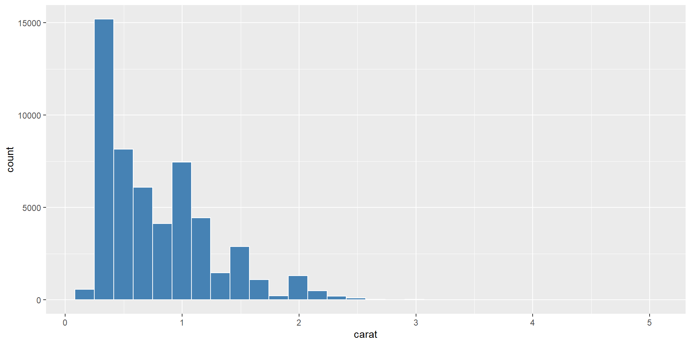
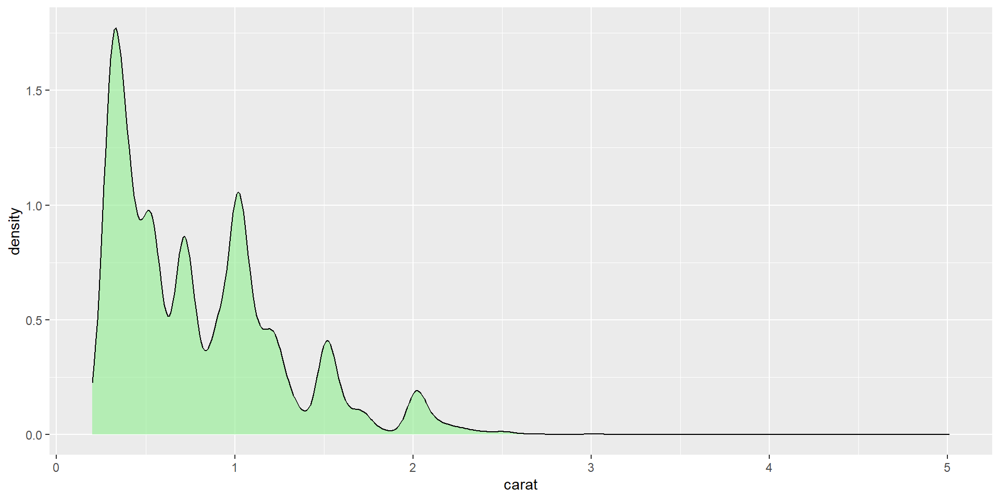
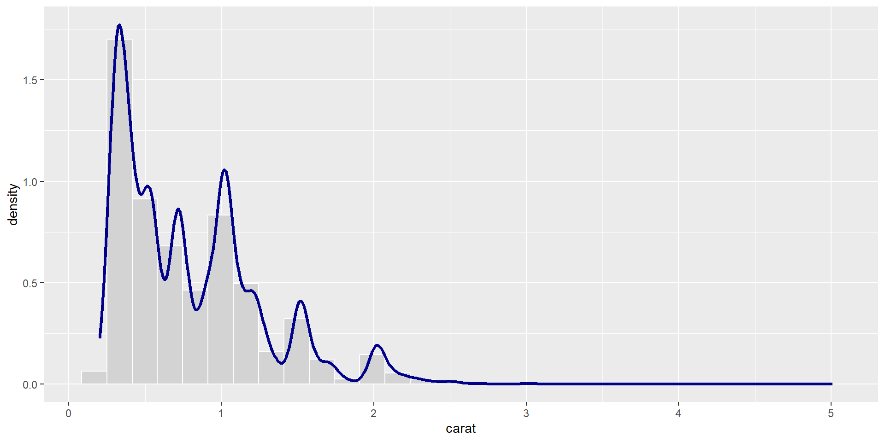
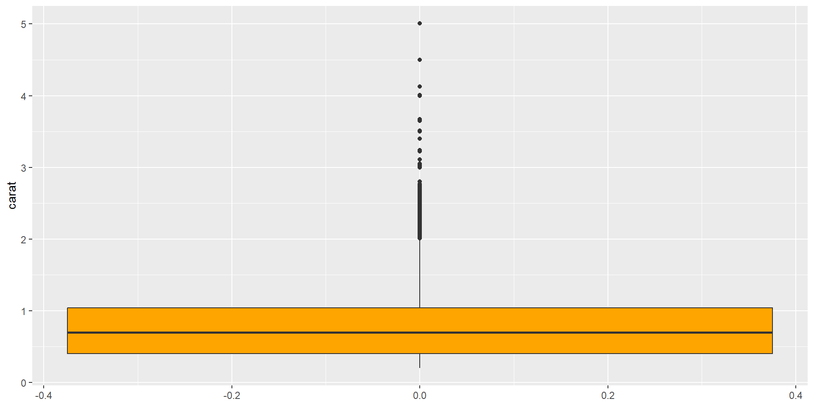
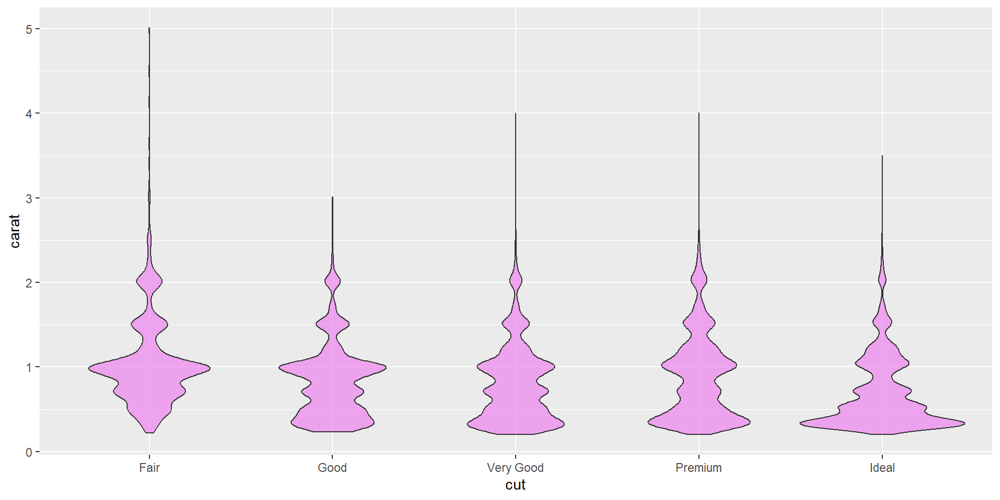
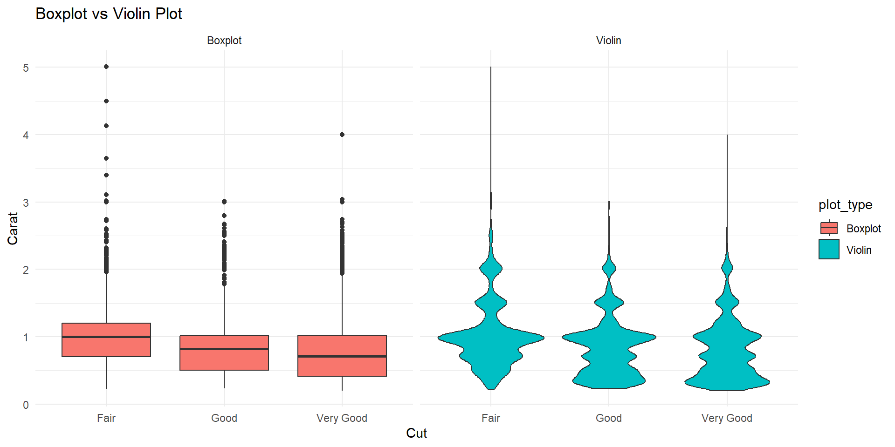
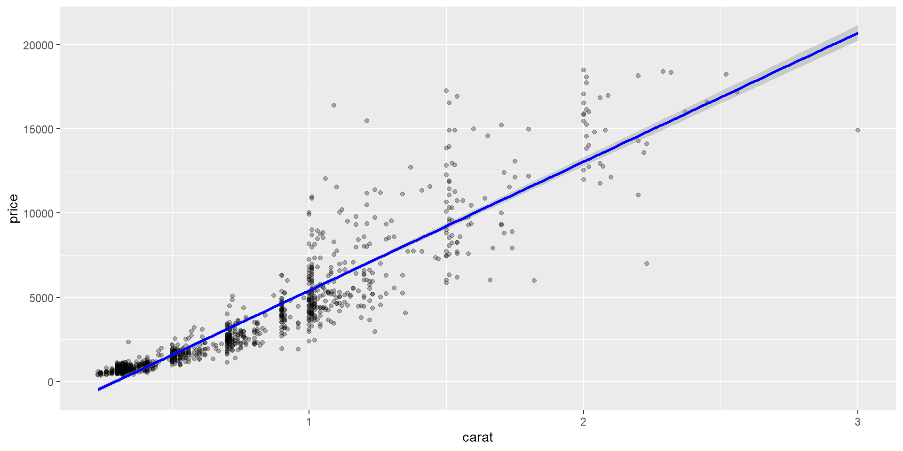
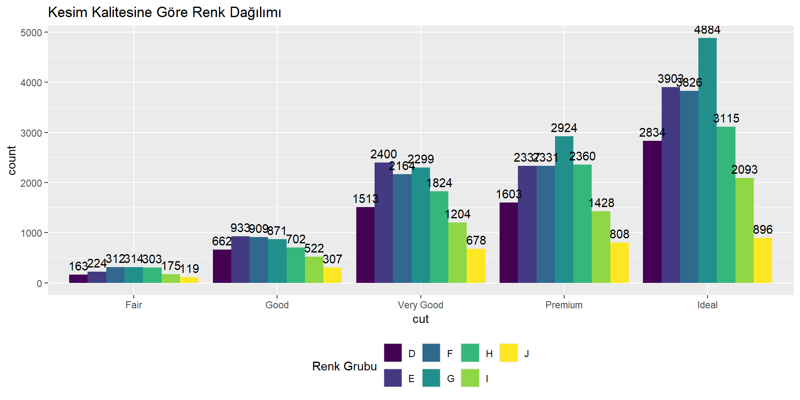
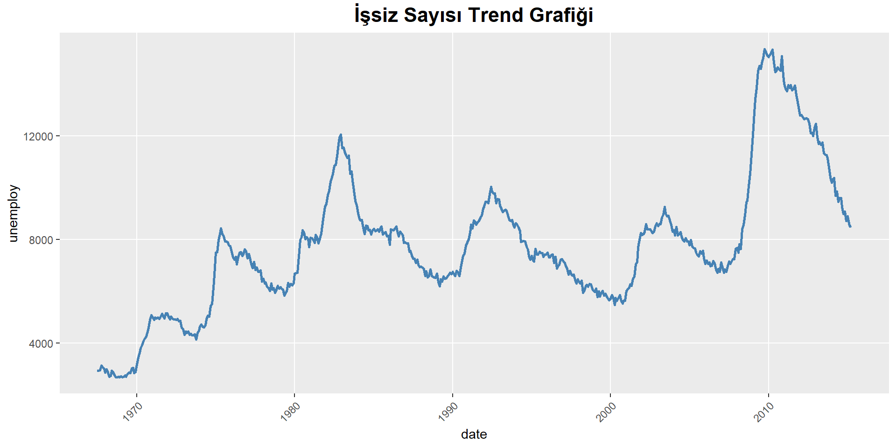

R Programlama ile Veri Analizi
ggplot2 ile Veri Görselleştirme
16-05-2025
Sunum Planı
- Veri Görselleştirme
- ggplot2
- Dağılım Grafikleri
- SaçılımGrafikleri
- Sütun Grafikleri
- Zaman Serisi Grafikleri
📦 Ders Materyalleri: https://github.com/MFatihTuzen/UYIK-R
Neden Görselleştirme?
📊 Veriyi sayılardan görsele dönüştürmek:
Desenleri ve ilişkileri fark etmenin en hızlı yolu
Anomali ve uç değerleri yakalama aracı
Model kurmadan önce veriyle konuşma fırsatı
Son kullanıcıya anlatmanın en etkili yöntemi
🔍 Görselleştirme = Keşif + Anlatı + İkna
📌 R’de veri görselleştirme için en güçlü paket: ggplot2
ggplot2 Mantığı
- Katman (layer) temelli sistem: her grafik parçası ayrı bir katmandır
ggplot(data, aes(...)) + geom_*() + ...şeklinde inşa edilir
🔧 Temel bileşenler:
| Bileşen | Açıklama |
|---|---|
data |
Veri seti |
aes() |
Estetik: eksenler, renk, şekil |
geom_*() |
Grafik türü |
labs() |
Etiketler, başlıklar |
theme_*() |
Görsel stil ayarları |
💡
ggplot2sadece grafik değil, grafik dilidir.
📦 Veri Seti: diamonds
📦 ggplot2 paketi içinde yer alan, elmasların fiziksel özelliklerini ve fiyatlarını içeren hazır veri setidir.
📊 İçerdiği Değişkenler
| Değişken | Açıklama | Türü |
|---|---|---|
carat |
Elmas ağırlığı (0.2 gram = 1 ct) | Sürekli |
cut |
Kesim kalitesi (Fair → Ideal) | Kategorik |
color |
Renk derecesi (D = en iyi) | Kategorik |
clarity |
Berraklık derecesi | Kategorik |
price |
Fiyat (ABD doları) | Sürekli |
x, y, z |
Fiziksel boyutlar (mm) | Sürekli |
📌 Neden Bu Veri Seti?
Hem sürekli hem kategorik değişken içeriyor
50.000+ gözlem → yoğunluk ve desen analizi için ideal
Temiz ve hazır → ön işleme gerek yok
Tüm grafik türlerine uygun
💡 Eğitim, analiz ve grafik becerilerini geliştirmek için mükemmel bir veri setidir.
Dağılım Grafikleri
Sürekli değişkenlerin değerlerinin nasıl dağıldığını görselleştiren grafik türleridir.
📌 Amaç:
Merkez (ortalama, medyan)
Yayılım (min–maks, çeyrekler, standart sapma)
Aykırılar
Dağılım şekli (simetrik, çarpık, çift tepeli…)
🔍 Kullanılan Bazı Grafik Türleri
| Grafik Türü | Ne Zaman Kullanılır? |
|---|---|
| Histogram | Gözlem sayısı ile dağılım analizi |
| Density Plot | Sürekli, pürüzsüz dağılım analizi (büyük veri için) |
| Boxplot | Merkezi eğilim + çeyrekler + aykırılar |
| Violin Plot | Boxplot + yoğunluk bilgisi birleşimi |
📊 Her grafik veri setinin farklı yönlerini ortaya çıkarır.
👀 Doğru görselleştirme → doğru veri okuma.
🟦 Histogram
📌 Her sütun belirli bir aralıktaki gözlem sayısını gösterir.
🎯 Ne Zaman Kullanılır?
- Gözlem sayısı yeterli ise (örneğin > 100)
- Dağılım yapısı keşfi (tek modlu, çarpıklık, uçlar)
🔧 Fonksiyon ve Argümanlar
| Argüman | Açıklama |
|---|---|
bins |
Aralık sayısı (fazla olursa detay, az olursa özet) |
fill |
Sütun içi renk |
color |
Sütun kenarlığı rengi |
aes(y = ..density..) |
Histogramı yoğunluk olarak çizmek için |
🟦 Histogram

🌊 Yoğunluk Grafiği (Density Plot)
⚠️ Histogramdan farklı olarak gözlem sayısını değil yoğunluğu gösterir
🔍 Avantajları
Eğilimleri daha net gösterir
Karşılaştırmalı analizlerde idealdir (örn. iki grup)
🌊 Yoğunluk Grafiği (Density Plot)

Histogram ve Density
Histogram ve density aynı grafik içinde birlikte çizilebilir!
Histogram ve Density

📦 Boxplot
📌 Medyan, çeyrekler (Q1 ve Q3), minimum–maksimum ve aykırı değerleri gösterir.
📌 Yorumlama
Kutu: Q1–Q3 aralığı (IQR)
Çizgi: Medyan
Kuyruklar: minimum ve maksimum (outlier hariç)
Noktalar: aykırı değerler
🔧 Fonksiyon Argümanları
| Argüman | Açıklama |
|---|---|
notch = TRUE |
Medyan güven aralığını gösterir |
outlier.colour |
Aykırı değer rengi |
⚠️ Kategorik gruplar için
aes(x = group, y = value)yapısıyla çok güçlü hale gelir.
📦 Boxplot

🎻 Violin Plot – Yoğunluk + Boxplot
🎻 Dağılımın şekli, yoğunluğu ve merkezi bir arada gösterilir
📌 Avantajları
Özellikle çok modlu dağılımlar için daha bilgilendirici
Yoğunluk grafiği ile boxplot’un birleşimi
Büyük veri setlerinde daha estetik ve sezgisel
🔧 Önemli Argümanlar
| Argüman | Açıklama |
|---|---|
trim = FALSE |
Tüm yoğunluk kuyruklarını gösterir |
scale = "area" |
Alan, genişlik ya da count bazlı |
🎯 Violin plot, boxplot’un fazla sade kaldığı durumlarda güçlü bir alternatiftir.
🎻 Violin Plot – Yoğunluk + Boxplot

Boxplot vs Violin Plot
Boxplot vs Violin Plot
Boxplot sadece medyan, çeyrekler ve uç değerleri gösterir
- Violin plot → bu bilgileri gösterir + yoğunluğun şekli de ortaya çıkar
- Violin plot özellikle çok modlu dağılımlar için bilgilendiricidir
- Boxplot daha sade ama bazen fazla özet kalır
🔍 Violin plot, dağılımı görmek isteyen göz için;
Boxplot, özet görmek isteyen akıl içindir.
Saçılım (Scatter) Grafikleri
İki sürekli değişken arasındaki ilişkiyi görselleştirir.
📌 Kullanım Amaçları:
İki değişkenin birlikte nasıl değiştiğini görmek
Doğrusal veya eğrisel ilişki var mı?
Gruplar arası farklar?
Aykırı gözlemler?
🎯 Ne Zaman Kullanılır?
- Korelasyon analizi öncesi
- Regresyon öncesi ilişkiyi incelemek için
- Gruplar arası farklılıkları görselleştirmek için
Estetik Öğeler (aes):
| Estetik | Anlamı |
|---|---|
x |
Bağımsız değişken |
y |
Bağımlı değişken |
color |
Gruplar arası farkı göstermek |
size |
Değişkenin önemini göstermek |
shape |
Kategorik grup ayrımı (kısıtlı sayıda) |
alpha |
Saydamlık – üst üste binen noktaları ayırmak için |
Basit Saçılım Grafiği
caratarttıkçapriceda artıyor → pozitif ilişkiDağılım doğrusal değil, kavisli ve ivmelenen bir yapı var
Alt bölgede yoğunluk fazla (küçük carat, düşük fiyat)
Grupları Renkle Göster
Scatter Plot’ta Kullanılabilecek Estetikler
ggplot()içindeaes()fonksiyonu görsel ögeleri veriyle ilişkilendirir.
Temel olarakxveyzorunludur. Diğer estetikler isteğe bağlıdır.💡 Estetikleri seçerken hem veri türünü hem de görsel sadeliği göz önünde bulundur!
🎯 Ekstra Estetik Argümanlar
| Argüman | Açıklama |
|---|---|
color |
Noktaları değişken bazlı renklendirir (kategori/sürekli) |
size |
Nokta büyüklüğünü bir değişkene göre ayarlar |
shape |
Nokta şekli – sadece kategorik değişkenlerde kullanılır |
alpha |
Saydamlık – üst üste gelen noktaları ayırt etmeye yarar |
stroke |
Noktanın dış çizgisinin kalınlığı (sadece bazı şekillerde) |
🧠 Dikkat Edilmesi Gerekenler
shapesadece 6 farklı kategoriye kadar destekler
sizeiçin çok küçük farklar algılanamaz – ölçek kontrol edilmeli
alpha→ büyük veri setlerinde her zaman tavsiye edilir
- Fazla estetik bir arada kullanılırsa grafik yorulabilir (az çoktur!)
📈Scatter Plot + Trend Çizgisi
geom_smooth()→ ilişkiyi modelleyip bir çizgi çizermethod = "lm"→ doğrusal regresyonse = TRUE→ çizginin etrafındaki güven aralığını gösterircolor→ çizgi rengi
📈Scatter Plot + Trend Çizgisi

Doğrusal vs Loess Trend Çizgisi
Sütun (Bar) Grafikleri – Nedir?
Kategorik değişkenlerin frekanslarını veya oranlarını görselleştirmeye yarar.
🎯 Kullanım Amaçları:
- Hangi kategori daha baskın?
- Sınıf dağılımları nasıl?
- Gruplar arası farklar açık mı?
- Oransal karşılaştırmalar yapılabilir mi?
🔧 Yöntemler
| Amaç | Kullanılacak geom |
|---|---|
| Gözlem sayısını göstermek | geom_bar() (otomatik sayar) |
| Manuel değerle çizmek | geom_col() (önceden sayılır) |
💡
geom_bar()→ sadece x,geom_col()→ hem x hem y gerekir
🎨 Renk, pozisyon, tema ve etiketlerle çok güçlü hale getirilebilir
📊 Basit geom_bar()
🎯 geom_bar() sadece x ister, y’yi frekans olarak otomatik hesaplar
Renk (fill) ve kenarlık (color) ile stil verilebilir
⚔️ geom_bar() vs geom_col()
| Özellik | geom_bar() |
geom_col() |
|---|---|---|
| Y değerleri | Otomatik olarak gözlem sayısını hesaplar | Senin sağladığın y değerini kullanır |
| Girdi | Sadece x yeterlidir |
x ve y ikisi de gerekir |
| Tipik kullanım | Kategorilerin frekans grafiği | Özet tablolar, oranlar, manuel veriler |
stat |
stat = "count" (varsayılan) |
stat = "identity" (otomatik olarak) |
⚔️ geom_bar() vs geom_col()
🎯 geom_bar() otomatik sayar. Diğer yandan geom_col ile çizilen grafik geom_bar() grafiğinin aynısını çizer — ama bu kez veriyi sen saydın, ggplot2 değil.
💬 Ne Zaman Hangisi?
✅ Eğer ham veriyle çalışıyorsan → geom_bar() yeterli ve kolay
✅ Eğer özetlenmiş veri (örneğin dplyr::count() sonrası) varsa → geom_col() gerekir
🔧 Bonus: Farkı Görmek İçin stat Parametresiyle Oyna
Aşağıdaki iki satır aynı sonucu verir:
📦Kategorileri Renkle Göster (fill)
📌 Bu grafik “cut” her biri içinde farklı “color” gruplarının dağılımını gösterir
💡 Varsayılan pozisyon stack → gruplar üst üste bindirilir
Alternatifler:
| position argümanı | Açıklama |
|---|---|
"stack" |
Üst üste bindirir (varsayılan) |
"dodge" |
Yan yana koyar |
"fill" |
Oranlar üzerinden normalize eder |
🎨Yan Yana Barlar (position = "dodge")
🆚 Her “cut” kategorisinde “color” değerleri yan yana gelir. Gruplar arası karşılaştırma için daha net.
🏷️ Etiket Ekleme ve Legend Ayarları
ggplot(diamonds, aes(x = cut, fill = color)) +
geom_bar(position = "dodge") +
geom_text(stat = "count", aes(label = after_stat(count)),
position = position_dodge(width = 0.9), vjust = -0.5) +
labs(title = "Kesim Kalitesine Göre Renk Dağılımı",
fill = "Renk Grubu") +
theme(legend.position = "bottom")
🎯 Açıklama:
geom_text()→ sayısal etiket eklerstat = "count"→ sayımı otomatik hesaplarafter_stat(count)→ggplot2v3.4+ sürümle gelen yeni yapılegend.position = "bottom"→ legenda sunum dostu yerleştirme
Sütun Grafikleri – Sık Yapılan Hatalar
⚠️ Kategorik değişken sayısı çoksa:
→ Sütunlar aşırı sıkışır, okunabilirlik düşer
→ Gerekirse gruplandır veya sadeleştir
⚠️ Y ekseni 0’dan başlamıyorsa:
→ Görsel yanılsama olur → yorumlar hatalı olur
⚠️ Oran karşılaştırması için: → position = "fill" kullan, sayı değil oran göster
🎯 Grafik sadece şekil değil → veri anlatım aracıdır
Zaman Serisi Grafiklerinin Önemi
📈 Değerlerin zaman içindeki değişimini görselleştirmeye yarar.
🎯 Kullanım Amaçları:
- Trendleri, mevsimsellikleri ve kırılmaları görmek
- Olayların zamanlamasına bağlı değişimleri izlemek
- Seriler arası karşılaştırmalar yapmak (birden fazla çizgi)
💡 Uygun Grafik Tipi
| Amaç | Kullanılacak geom |
|---|---|
| Tek seri | geom_line() |
| Çoklu seri | facet_wrap(), color |
| Noktaları görmek | + geom_point() |
| Gruplu seriler | group, color, facet |
📘 Veri Seti: economics
📦 ggplot2 paketinde yer alan hazır zaman serisi veri setidir.
Rows: 574
Columns: 6
$ date <date> 1967-07-01, 1967-08-01, 1967-09-01, 1967-10-01, 1967-11-01, …
$ pce <dbl> 506.7, 509.8, 515.6, 512.2, 517.4, 525.1, 530.9, 533.6, 544.3…
$ pop <dbl> 198712, 198911, 199113, 199311, 199498, 199657, 199808, 19992…
$ psavert <dbl> 12.6, 12.6, 11.9, 12.9, 12.8, 11.8, 11.7, 12.3, 11.7, 12.3, 1…
$ uempmed <dbl> 4.5, 4.7, 4.6, 4.9, 4.7, 4.8, 5.1, 4.5, 4.1, 4.6, 4.4, 4.4, 4…
$ unemploy <dbl> 2944, 2945, 2958, 3143, 3066, 3018, 2878, 3001, 2877, 2709, 2…📘 Veri Seti: economics
🧾 Değişkenler:
| Değişken | Açıklama |
|---|---|
date |
Gözlem tarihi (aylık) |
pce |
Kişisel tüketim harcamaları (milyar $) |
pop |
Nüfus |
unemploy |
İşsiz sayısı (bin kişi) |
uempmed |
Ortalama işsizlik süresi (hafta) |
psavert |
Tasarruf oranı (%) |
📅 Aylık frekansta, 1967 yılından itibaren gözlem içerir.
🔍 Zaman serisi analizleri ve grafik örnekleri için idealdir.
Temel Zaman Serisi Grafiği
🔍 geom_line() zaman ekseninde kesintisiz çizgi üretir
🧠 Trend ve ani kırılmalar doğrudan görülebilir
theme() ile Grafik Düzenleme
ggplot(economics, aes(x = date, y = unemploy)) +
geom_line(color = "steelblue", size = 1) +
labs(title = "İşsiz Sayısı Trend Grafiği") +
theme(
plot.title = element_text(size = 16, face = "bold", hjust = 0.5),
axis.text.x = element_text(angle = 45, hjust = 1),
panel.grid.minor = element_blank()
)
🎯 Grafik okunabilirliği için başlık, eksenler ve grid çizgileri düzenlenir
Çoklu Zaman Serisi Grafiği
📦 economics_long zaten tidy (long) formattadır
facet_wrap() her göstergeyi ayrı panelde net bir şekilde sunar
free_y → her gösterge kendi eksen ölçeğiyle değerlendirilir
🎨 Renkli Tek Grafik: color = variable
🧠 color = variable → her seriyi ayırt etmek kolay
🎯 Özellikle karşılaştırmalı analizler için uygundur
⚠️ Grafik ölçekleri aynı değilse karşılaştırma yanıltıcı olabilir.
Ekstra Grafik Türleri – ggplot2 ile Neler Yapabilirsiniz?
geom_area()→ kümülatif değişimgeom_smooth()→ trend ve ilişki çizgisigeom_point()→ seyrek serilerde nokta görselliğigeom_vline()/annotate()→ önemli tarih işaretlemegganimate→ zamanla değişimi gösteren animasyonlarplotly::ggplotly()→ interaktif grafiklere dönüşüm
ggplot2 için Harika Kaynaklar
- 📘 ggplot2: Elegant Graphics for Data Analysis (Hadley Wickham)
- 🌐 https://r-graph-gallery.com/ – yüzlerce örnek
- 📚 The Big Book of R – Data Visualization
- 📘
ggplot2cheat sheet → RStudio’dan indirilebilir
- 📦 Paketler:
ggthemes,ggrepel,viridis,scales,patchwork
💡 Grafik öğrenmek, “çizip geçmek” değil “gösterip anlatmak” işidir.
Grafik Çizerken Dikkat Etmemiz Gerekenler
✅ Y ekseni mümkünse 0’dan başlamalı
✅ Kategoriler okunabilir olmalı (çok kategori varsa sadeleştir)
✅ Renk seçimi → anlamlı ve erişilebilir (renk körlüğü!)
✅ Başlıklar, etiketler, legend → anlatımı netleştirmeli
✅ Fazla süs → grafiğin mesajını zayıflatır
✅ Ölçek farkı varsa karşılaştırmadan kaçın (örnek: economics_long)
🎯 Grafik, analiz sonucunun değil, anlamın görselidir
Teşekkürler
Muhammed Fatih TÜZEN
e-posta: fatih.tuzen@tuik.gov.tr
Linkedin: https://www.linkedin.com/in/dr-m-fatih-t-2b2a4328/

Altıncı Uluslararası Uygulamalı İstatistik Kongresi (UYIK 2025)